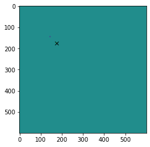

Custom pipeline¶
Objective¶
In this tutorial we will create a custom Block and include it in a pipeline to detect and trace a moving object in the following observation:

Dataset¶
For this tutorial we will work on a synthetic observation which gif can be seen above. To generate this dataset:
[1]:
from prose.tutorials import moving_object
import numpy as np
destination = "moving_object_dataset"
time = np.linspace(0, 10, 20)
np.random.seed(42)
moving_object(time, destination)
WARNING (theano.link.c.cmodule): install mkl with `conda install mkl-service`: No module named 'mkl'
100%|███████████████████████████████████████████| 20/20 [00:00<00:00, 32.59it/s]
We directly instantiate a FitsManager object to explore this folder
[2]:
from prose import FitsManager
#
fm = FitsManager(destination)
print(fm)
100%|█████████████████████████████████████████| 26/26 [00:00<00:00, 2192.79it/s]
Observations:
╒═════════╤════════════╤═════════════╤══════════╤══════════╤════════╤════════════╕
│ index │ date │ telescope │ target │ filter │ type │ quantity │
╞═════════╪════════════╪═════════════╪══════════╪══════════╪════════╪════════════╡
│ 0 │ 2022-02-05 │ A │ prose │ a │ light │ 20 │
╘═════════╧════════════╧═════════════╧══════════╧══════════╧════════╧════════════╛
Calibrations:
╒════════════╤═════════════╤══════════╤══════════╤════════╤════════════╕
│ date │ telescope │ target │ filter │ type │ quantity │
╞════════════╪═════════════╪══════════╪══════════╪════════╪════════════╡
│ 2022-02-05 │ A │ prose │ │ bias │ 1 │
├────────────┼─────────────┼──────────┼──────────┼────────┼────────────┤
│ 2022-02-05 │ A │ prose │ │ dark │ 1 │
├────────────┼─────────────┼──────────┼──────────┼────────┼────────────┤
│ 2022-02-05 │ A │ prose │ a │ flat │ 4 │
╘════════════╧═════════════╧══════════╧══════════╧════════╧════════════╛
Principle¶
We will use difference imaging to locate the moving object. This is shown in the next code where we can see that difference between consecutive images allows to locate a moving source.
[4]:
import numpy as np
from astropy.io import fits
import matplotlib.pyplot as plt
# loading first and second images
files = fm.images
im0 = fits.getdata(files[5])
im1 = fits.getdata(files[6])
# difference image
im_diff = im1 - im0
# max difference position
position = np.array(np.unravel_index(np.argmax(im_diff), im_diff.shape))[::-1]
plt.imshow(im_diff)
_ = plt.plot(*position, "x", c="k")

Creating a new :Block¶
Now we can create a Block that will extract and store this information
[5]:
from prose import Block
from prose.utils import z_scale
class MovingTarget(Block):
# nothing to initialize
def __init__(self, **kwargs):
super().__init__(**kwargs)
# stores last image and positions
self.last_image = None
self.positions = []
def run(self, image):
# difference imaging we did above
if self.last_image is None:
self.positions.append(None)
else:
im_diff = image.data - self.last_image
position = np.unravel_index(np.argmax(im_diff), im_diff.shape)[::-1]
self.positions.append(position)
self.last_image = image.data
def terminate(self):
# We finish by plotting positions over the last image
plt.imshow(z_scale(self.last_image), cmap="Greys_r")
coords_path = np.array(self.positions[1::])
plt.plot(*coords_path.T, "-o", ms=4)
We can now place our new block in a Unit and run it:
[6]:
from prose import Sequence
pipeline = Sequence([
MovingTarget()
])
pipeline.run(fm.images)
RUN default: 100%|█████████████████████████| 20/20 [00:00<00:00, 282.55images/s]